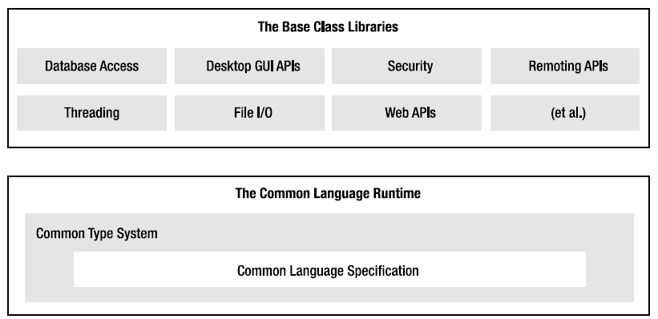

Now that you know some of the benefits provided by .NET, let’s preview three key (and interrelated) entities that make it all possible: the CLR, CTS, and CLS. From a programmer’s point of view, .NET can be understood as a runtime environment and a comprehensive base class library. The runtime layer is properly referred to as the Common Language Runtime, or CLR. The primary role of the CLR is to locate, load, and manage .NET types on your behalf. The CLR also takes care of a number of low-level details such as memory management, application hosting, handling threads, and performing various security checks.
Another building block of the .NET platform is the Common Type System, or CTS. The CTS specification fully describes all possible data types and programming constructs supported by the runtime, specifies how these entities can interact with each other, and details how they are represented in the .NET metadata format (more information on metadata later in this chapter; see Chapter 15 for complete details).
Understand that a given .NET-aware language might not support each and every feature defined by the CTS. The Common Language Specification, or CLS, is a related specification that defines a subset of common types and programming constructs that all .NET programming languages can agree on. Thus, if you build .NET types that only expose CLS-compliant features, you can rest assured that all .NET-aware languages can consume them. Conversely, if you make use of a data type or programming construct that is outside of the bounds of the CLS, you cannot guarantee that every .NET programming language can interact with your .NET code library. Thankfully, as you will see later in this chapter, it is very simple to tell your C# compiler to check all of your code for CLS compliance.
In addition to the CLR and CTS/CLS specifications, the .NET platform provides a base class library that is available to all .NET programming languages. Not only does this base class library encapsulate various primitives such as threads, file input/output (I/O), graphical rendering systems, and interaction with various external hardware devices, but it also provides support for a number of services required by most real-world applications.
For example, the base class libraries define types that facilitate database access, manipulation of XML documents, programmatic security, and the construction of web-enabled as well as traditional desktop and console-based front ends. From a high level, you can visualize the relationship between the CLR, CTS, CLS, and the base class library, as shown in Figure 1-1.
Figure 1-1 The CLR, CTS, CLS, and base class library relationship
Given that .NET is such a radical departure from previous technologies, Microsoft crafted a new programming language, C#, specifically for this platform. C# is a programming language whose core syntax looks very similar to the syntax of Java. However, to call C# a Java rip-off is inaccurate. Both C# and Java are members of the C family of programming languages (e.g., C, Objective C, C++) and therefore share a similar syntax.
The truth of the matter is that many of C#’s syntactic constructs are modeled after various aspects of Visual Basic 6.0 and C++. For example, like VB6, C# supports the notion of formal type properties (as opposed to traditional getter and setter methods) and the ability to declare methods taking a varying number of arguments (via parameter arrays). Like C++, C# allows you to overload operators, as well as create structures, enumerations, and callback functions (via delegates).
Moreover, as you work through this text, you will quickly see that C# supports a number of features traditionally found in various functional languages (e.g., LISP or Haskell) such as lambda expressions and anonymous types. Furthermore, with the advent of LINQ (Language Integrated Query), C# supports a number of constructs that make it quite unique in the programming landscape. Nevertheless, the bulk of C# is indeed influenced by C-based languages.
Due to the fact that C# is a hybrid of numerous languages, the result is a product that is as syntactically clean—if not cleaner—as Java, is about as simple as VB6, and provides just about as much power and flexibility as C++ (without the associated ugly bits). Here is a partial list of core C# features that are found in all versions of the language.
With the release of .NET 2.0 (circa 2005), the C# programming language was updated to support numerous new bells and whistles, most notability the following:
.NET 3.5 (released circa 2008) added even more functionality to the C# programming language, including the following features:
The current release of the.NET platform version 4.0 updates C# yet again with a handful of features. While the following list of new constructs may seem rather limited, you see just how useful they can be as you work through this text.
Perhaps the most important point to understand about the C# language is that it can only produce code that can execute within the .NET runtime (you could never use C# to build a native COM server or an unmanaged C/C++ API application). Officially speaking, the term used to describe the code targeting the .NET runtime is managed code. The binary unit that contains the managed code is termed an assembly (more details on assemblies in just a bit). Conversely, code that cannot be directly hosted by the .NET runtime is termed unmanaged code.